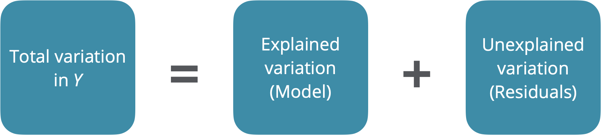

# load packages
library(tidyverse)
library(broom)
library(yardstick)
library(ggformula)
library(supernova)
library(tidymodels)
library(patchwork)
library(knitr)
library(janitor)
library(kableExtra)
# set default theme and larger font size for ggplot2
ggplot2::theme_set(ggplot2::theme_bw(base_size = 20))Model comparison
Announcements
- Open up AE 11 and complete Exercises 0-2
Topics
- ANOVA for multiple linear regression and sum of squares
- Comparing models with \(R^2\) vs. \(R^2_{ajd}\)
- Comparing models with AIC and BIC
- Occam’s razor and parsimony
Computational setup
Introduction
Data: Restaurant tips
Which variables help us predict the amount customers tip at a restaurant?
# A tibble: 169 × 4
Tip Party Meal Age
<dbl> <dbl> <chr> <chr>
1 2.99 1 Dinner Yadult
2 2 1 Dinner Yadult
3 5 1 Dinner SenCit
4 4 3 Dinner Middle
5 10.3 2 Dinner SenCit
6 4.85 2 Dinner Middle
7 5 4 Dinner Yadult
8 4 3 Dinner Middle
9 5 2 Dinner Middle
10 1.58 1 Dinner SenCit
# ℹ 159 more rowsVariables
Predictors:
Party: Number of people in the partyMeal: Time of day (Lunch,Dinner,Late Night)Age: Age category of person paying the bill (Yadult,Middle,SenCit)
Outcome: Tip: Amount of tip
Outcome: Tip

Predictors

Relevel categorical predictors
tips <- tips |>
mutate(
Meal = fct_relevel(Meal, "Lunch", "Dinner", "Late Night"),
Age = fct_relevel(Age, "Yadult", "Middle", "SenCit")
)Predictors, again

Outcome vs. predictors

Fit and summarize model
| term | estimate | std.error | statistic | p.value |
|---|---|---|---|---|
| (Intercept) | -0.170 | 0.366 | -0.465 | 0.643 |
| Party | 1.837 | 0.124 | 14.758 | 0.000 |
| AgeMiddle | 1.009 | 0.408 | 2.475 | 0.014 |
| AgeSenCit | 1.388 | 0.485 | 2.862 | 0.005 |
. . .
Is this model good?
Another model summary
anova(tip_fit) |>
tidy() |>
kable(digits = 2)| term | df | sumsq | meansq | statistic | p.value |
|---|---|---|---|---|---|
| Party | 1 | 1188.64 | 1188.64 | 285.71 | 0.00 |
| Age | 2 | 38.03 | 19.01 | 4.57 | 0.01 |
| Residuals | 165 | 686.44 | 4.16 | NA | NA |
Analysis of variance (ANOVA)
Analysis of variance (ANOVA)

ANOVA
- Main Idea: Decompose the total variation of the outcome into:
- the variation that can be explained by the each of the variables in the model
- the variation that can’t be explained by the model (left in the residuals)
- \(SS_{Total}\): Total sum of squares, variability of outcome, \(\sum_{i = 1}^n (y_i - \bar{y})^2\)
- \(SS_{Error}\): Residual sum of squares, variability of residuals, \(\sum_{i = 1}^n (y_i - \hat{y}_i)^2\)
- \(SS_{Model} = SS_{Total} - SS_{Error}\): Variability explained by the model, \(\sum_{i = 1}^n (\hat{y}_i - \bar{y})^2\)
. . .
Complete Exercise 3.
ANOVA output in R1
| term | df | sumsq | meansq | statistic | p.value |
|---|---|---|---|---|---|
| Party | 1 | 1188.63588 | 1188.635880 | 285.711511 | 0.000000 |
| Age | 2 | 38.02783 | 19.013916 | 4.570361 | 0.011699 |
| Residuals | 165 | 686.44389 | 4.160266 | NA | NA |
ANOVA output, with totals
| term | df | sumsq | meansq | statistic | p.value |
|---|---|---|---|---|---|
| Party | 1 | 1188.64 | 1188.64 | 285.71 | 0 |
| Age | 2 | 38.03 | 19.01 | 4.57 | 0.01 |
| Residuals | 165 | 686.44 | 4.16 | ||
| Total | 168 | 1913.11 |
Sum of squares
| term | df | sumsq |
|---|---|---|
| Party | 1 | 1188.64 |
| Age | 2 | 38.03 |
| Residuals | 165 | 686.44 |
| Total | 168 | 1913.11 |
- \(SS_{Total}\): Total sum of squares, variability of outcome, \(\sum_{i = 1}^n (y_i - \bar{y})^2\)
- \(SS_{Error}\): Residual sum of squares, variability of residuals, \(\sum_{i = 1}^n (y_i - \hat{y}_i)^2\)
- \(SS_{Model} = SS_{Total} - SS_{Error}\): Variability explained by the model, \(\sum_{i = 1}^n (\hat{y}_i - \bar{y})^2\)
Sum of squares: \(SS_{Total}\)
| term | df | sumsq |
|---|---|---|
| Party | 1 | 1188.64 |
| Age | 2 | 38.03 |
| Residuals | 165 | 686.44 |
| Total | 168 | 1913.11 |
\(SS_{Total}\): Total sum of squares, variability of outcome
\(\sum_{i = 1}^n (y_i - \bar{y})^2\) = 1913.11
Sum of squares: \(SS_{Error}\)
| term | df | sumsq |
|---|---|---|
| Party | 1 | 1188.64 |
| Age | 2 | 38.03 |
| Residuals | 165 | 686.44 |
| Total | 168 | 1913.11 |
\(SS_{Error}\): Residual sum of squares, variability of residuals
\(\sum_{i = 1}^n (y_i - \hat{y}_i)^2\) = 686.44
Sum of squares: \(SS_{Model}\)
| term | df | sumsq |
|---|---|---|
| Party | 1 | 1188.64 |
| Age | 2 | 38.03 |
| Residuals | 165 | 686.44 |
| Total | 168 | 1913.11 |
\(SS_{Model}\): Variability explained by the model
\(\sum_{i = 1}^n (\hat{y}_i - \bar{y})^2 = SS_{Model} = SS_{Total} - SS_{Error} =\) 1226.67
F-Test: Testing the whole model at once
Hypotheses:
\(H_0: \beta_1 = \beta_2 = \cdots = \beta_k = 0\) vs. \(H_A:\) at least one \(\beta_i \neq 0\)
. . .
Test statistic: F-statistics
\[ F = \frac{MSModel}{MSE} = \frac{SSModel/k}{SSE/(n-k-1)} \\ \]
. . .
p-value: Probability of observing a test statistic at least as extreme (in the direction of the alternative hypothesis) from the null value as the one observed
\[ \text{p-value} = P(F > \text{test statistic}), \]
calculated from an \(F\) distribution with \(k\) and \(n - k - 1\) degrees of freedom.
F-test in R
- Use
glancefunction frombroompackagestatistic: F-statisticp.value: p-value from F-test
. . .
Complete Exercise 4.
Comparing sets of predictors
Nested Models
- We say one model is nested inside another model if all of its TERMS are present in the other model
. . .
- Consider three different models:
- Model 1: \(Y = \beta_0 + \beta_1X_1 + \beta_2X_2 + \beta_3X_3 + \epsilon\)
- Model 2: \(Y = \beta_0 + \beta_1X_1 + \beta_2X_2 + \epsilon\)
- Model 3: \(Y = \beta_0 + \beta_1X_1 + \beta_2X_2 + \beta_3X_1X_2 + \epsilon\)
. . .
- Model 2 is nested inside both Model 1 and Model 3.
- Why isn’t Model 3 nested in Model 1?
- Smaller model is called the Reduced Model
- Larger model is called the Full Model (be careful, this term depends on context)
. . .
- Complete Exercises 5-7.
Recall: ANOVA, F-Test
Hypotheses:
\(H_0: \beta_1 = \beta_2 = \cdots = \beta_p = 0\) vs. \(H_A:\) at least one \(\beta_i \neq 0\)
Test statistic: F-statistic
\[ F = \frac{MSModel}{MSE} = \frac{SSModel/p}{SSE/(n-p-1)} \\ \]
p-value: Probability of observing a test statistic at least as extreme (in the direction of the alternative hypothesis) from the null value as the one observed
\[ \text{p-value} = P(F > \text{test statistic}), \]
calculated from an \(F\) distribution with \(p\) and \(n - p - 1\) degrees of freedom.
Nested F-Test
Suppose \(k\) is the number of \(\beta\)’s in the nested model and \(p\) is the full number of predictors in the larger model. I.e. \(\beta_{k+1},\ldots, \beta_{p}\) are the new \(\beta\)’s
Hypotheses:
\(H_0: \beta_{k+1} = \beta_{k+2} = \cdots = \beta_p = 0\) vs. \(H_A:\) at least one \(\beta_i \neq 0\) for \(i>k+1\)
Test statistic: F-statistic
\[ F = \frac{(SSModel_{full} - SSModel_{reduced})/(p-k)}{SSE_{full}/(n-p-1)} \\ \]
p-value: Probability of observing a test statistic at least as extreme (in the direction of the alternative hypothesis) from the null value as the one observed
\[ \text{p-value} = P(F > \text{test statistic}), \]
calculated from an \(F\) distribution with \(p-k\) (the number of predictors being tested) and \(n - p - 1\) degrees of freedom.
. . .
Note: Same as regular F-test if reduced model is just \(Y= \beta_0\).
Nested F-Test in R
tip_fit_1 <- lm(Tip ~ Party + Age + Meal, data = tips)
tip_fit_2 <- lm(Tip ~ Party + Age + Meal + Day, data = tips)
anova(tip_fit_1, tip_fit_2) |> # Enter reduced model first
tidy() |>
kable()| term | df.residual | rss | df | sumsq | statistic | p.value |
|---|---|---|---|---|---|---|
| Tip ~ Party + Age + Meal | 163 | 622.9793 | NA | NA | NA | NA |
| Tip ~ Party + Age + Meal + Day | 158 | 607.3815 | 5 | 15.59778 | 0.8114993 | 0.543086 |
\[ F = \frac{(SSModel_{full} - SSModel_{reduced})/(p-k)}{SSE_{full}/(n-p-1)} = \frac{15.59778/5}{6073815/158} = 0.8114993 \]
Let’s interpret this together.
. . .
Complete Exercise 8.
Model comparison
R-squared, \(R^2\)
Recall: \(R^2\) is the proportion of the variation in the response variable explained by the regression model.
. . .
\[ R^2 = \frac{SS_{Model}}{SS_{Total}} = 1 - \frac{SS_{Error}}{SS_{Total}} \]
Complete Exercises 9-11.
R-squared, \(R^2\), Overfitting
- \(R^2\) will always increase as we add more variables to the model
- If we add enough variables, we can usually achieve \(R^2=100\%\)
- Eventually our model will over-align to the noise in our data and become worse at predicting new data… this is called overfitting
- If we only use \(R^2\) to choose a best fit model, we will be prone to choosing the model with the most predictor variables
{kind=link}
Adjusted \(R^2\)
- Adjusted \(R^2\): measure that includes a penalty for unnecessary predictor variables
- Similar to \(R^2\), it is a measure of the amount of variation in the response that is explained by the regression model
- Differs from \(R^2\) by using the mean squares (sum of squares/degrees of freedom) rather than sums of squares and therefore adjusting for the number of predictor variables
\(R^2\) and Adjusted \(R^2\)
\[R^2 = \frac{SS_{Model}}{SS_{Total}} = 1 - \frac{SS_{Error}}{SS_{Total}}\]
. . .
\[R^2_{adj} = 1 - \frac{SS_{Error}/(n-p-1)}{SS_{Total}/(n-1)}\]
where
\(n\) is the number of observations used to fit the model
\(p\) is the number of terms (not including the intercept) in the model
Using \(R^2\) and Adjusted \(R^2\)
- \(R^2_{adj}\) can be used as a quick assessment to compare the fit of multiple models; however, it should not be the only assessment!
- Use \(R^2\) when describing the relationship between the response and predictor variables
Complete Exercises 12-13.
Comparing models with \(R^2_{adj}\)
tip_fit_1:
| r.squared | adj.r.squared | sigma | statistic | p.value | df | logLik | AIC | BIC | deviance | df.residual | nobs |
|---|---|---|---|---|---|---|---|---|---|---|---|
| 0.6743626 | 0.6643738 | 1.954983 | 67.51136 | 0 | 5 | -350.0405 | 714.0811 | 735.9904 | 622.9793 | 163 | 169 |
tip_fit_2:
| r.squared | adj.r.squared | sigma | statistic | p.value | df | logLik | AIC | BIC | deviance | df.residual | nobs |
|---|---|---|---|---|---|---|---|---|---|---|---|
| 0.6825157 | 0.6624218 | 1.96066 | 33.96625 | 0 | 10 | -347.898 | 719.7959 | 757.3547 | 607.3815 | 158 | 169 |
- Which model would we choose based on \(R^2\)?
- Which model would we choose based on Adjusted \(R^2\)?
- Which statistic should we use to choose the final model - \(R^2\) or Adjusted \(R^2\)? Why?
AIC & BIC
Estimators of prediction error and relative quality of models:
. . .
Akaike’s Information Criterion (AIC): \[AIC = n\log(SS_\text{Error}) - n \log(n) + 2(p+1)\]
. . .
Schwarz’s Bayesian Information Criterion (BIC): \[BIC = n\log(SS_\text{Error}) - n\log(n) + log(n)\times(p+1)\]
AIC & BIC
\[ \begin{aligned} & AIC = \color{blue}{n\log(SS_\text{Error})} - n \log(n) + 2(p+1) \\ & BIC = \color{blue}{n\log(SS_\text{Error})} - n\log(n) + \log(n)\times(p+1) \end{aligned} \]
. . .
First Term: Decreases as p increases… why?
AIC & BIC
\[ \begin{aligned} & AIC = n\log(SS_\text{Error}) - \color{blue}{n \log(n)} + 2(p+1) \\ & BIC = n\log(SS_\text{Error}) - \color{blue}{n\log(n)} + \log(n)\times(p+1) \end{aligned} \]
Second Term: Fixed for a given sample size n
AIC & BIC
\[ \begin{aligned} & AIC = n\log(SS_\text{Error}) - n\log(n) + \color{blue}{2(p+1)} \\ & BIC = n\log(SS_\text{Error}) - n\log(n) + \color{blue}{\log(n)\times(p+1)} \end{aligned} \]
Third Term: Increases as p increases
Using AIC & BIC
\[ \begin{aligned} & AIC = n\log(SS_{Error}) - n \log(n) + \color{red}{2(p+1)} \\ & BIC = n\log(SS_{Error}) - n\log(n) + \color{red}{\log(n)\times(p+1)} \end{aligned} \]
Choose model with the smaller value of AIC or BIC
If \(n \geq 8\), the penalty for BIC is larger than that of AIC, so BIC tends to favor more parsimonious models (i.e. models with fewer terms)
Complete Exercise 14.
Comparing models with AIC and BIC
tip_fit_1
| AIC | BIC |
|---|---|
| 714.0811 | 735.9904 |
tip_fit_2
| AIC | BIC |
|---|---|
| 719.7959 | 757.3547 |
Which model would we choose based on AIC?
Which model would we choose based on BIC?
Commonalities between criteria
- \(R^2_{adj}\), AIC, and BIC all apply a penalty for more predictors
- The penalty for added model complexity attempts to strike a balance between underfitting (too few predictors in the model) and overfitting (too many predictors in the model)
- Goal: Parsimony
Parsimony and Occam’s razor
The principle of parsimony is attributed to William of Occam (early 14th-century English nominalist philosopher), who insisted that, given a set of equally good explanations for a given phenomenon, the correct explanation is the simplest explanation2
Called Occam’s razor because he “shaved” his explanations down to the bare minimum
Parsimony in modeling:
- models should have as few parameters as possible
- linear models should be preferred to non-linear models
- experiments relying on few assumptions should be preferred to those relying on many
- models should be pared down until they are minimal adequate (i.e. contain the minimum number of predictors required to meet some critereon)
- simple explanations should be preferred to complex explanations
In pursuit of Occam’s razor
Occam’s razor states that among competing hypotheses that predict equally well, the one with the fewest assumptions should be selected
Model selection follows this principle
We only want to add another variable to the model if the addition of that variable brings something valuable in terms of predictive power to the model
In other words, we prefer the simplest best model, i.e. parsimonious model
Alternate views
Sometimes a simple model will outperform a more complex model . . . Nevertheless, I believe that deliberately limiting the complexity of the model is not fruitful when the problem is evidently complex. Instead, if a simple model is found that outperforms some particular complex model, the appropriate response is to define a different complex model that captures whatever aspect of the problem led to the simple model performing well.
Radford Neal - Bayesian Learning for Neural Networks3
Other concerns with our approach
- All criteria we considered for model comparison require making predictions for our data and then uses the prediction error (\(SS_{Error}\)) somewhere in the formula
- But we’re making prediction for the data we used to build the model (estimate the coefficients), which can lead to overfitting
Model Selection
Model Selection
- So far: We’ve come up with a variety of metrics and tests which help us compare different models
- How do we choose the models to compare in the first place?
- Today: Best subset, forward selection, and backward selection
AIC, BIC, Mallows’ \(C_p\)
Estimators of prediction error and relative quality of models:
Akaike’s Information Criterion (AIC): \[AIC = n\log(SS_\text{Error}) - n \log(n) + 2(p+1)\]
Schwarz’s Bayesian Information Criterion (BIC): \[BIC = n\log(SS_\text{Error}) - n\log(n) + log(n)\times(p+1)\]
. . .
Mallows’ \(C_p\): \[C_p = \frac{SSE_{p}}{MSE_{full model}} - n + 2(p+1)\]
Best Subset Selection
- Computers are great now!
- Frequently feasible to try out EVERY combination of predictors if you total number of possible predictors is not too high.
Best Subset Selection in R
library(olsrr)
full_model <- lm(Tip ~ ., data = tips)
ols_step_best_subset(full_model) Best Subsets Regression
--------------------------------------------------------------------------
Model Index Predictors
--------------------------------------------------------------------------
1 Bill
2 Bday Bill
3 Day Party Bill
4 Day Party Bday Bill
5 Day Party Age Bday Bill
6 Day Payment Party Age Bday Bill
7 Day Payment Party Age GiftCard Bday Bill
8 Day Payment Party Age GiftCard Comps Bday Bill
9 Day Payment Party Age GiftCard Comps Alcohol Bday Bill
10 Day Meal Payment Party Age GiftCard Comps Alcohol Bday Bill
--------------------------------------------------------------------------
Subsets Regression Summary
----------------------------------------------------------------------------------------------------------------------------------
Adj. Pred
Model R-Square R-Square R-Square C(p) AIC SBIC SBC MSEP FPE HSP APC
----------------------------------------------------------------------------------------------------------------------------------
1 0.7662 0.7648 0.7582 7.3539 650.0922 170.4124 659.4819 452.6520 2.7101 0.0161 0.2394
2 0.7743 0.7716 0.7585 3.3820 646.1326 166.6253 658.6522 439.6163 2.6474 0.0158 0.2339
3 0.7806 0.7710 0.7526 8.7457 651.3566 164.1101 679.5257 429.9723 2.6689 0.0159 0.2301
4 0.7870 0.7763 0.7548 6.0330 648.3593 161.5085 679.6583 420.0053 2.6224 0.0156 0.2260
5 0.7912 0.7780 0.7512 6.9278 648.9839 160.5385 686.5427 414.2413 2.6181 0.0156 0.2242
6 0.7934 0.7775 0.7433 9.2903 651.1765 161.0873 694.9951 412.3801 2.6384 0.0157 0.2244
7 0.7940 0.7767 0.7374 10.8854 652.7266 162.9029 699.6751 413.8544 2.6634 0.0159 0.2265
8 0.7945 0.7758 0.7346 12.5119 654.3104 164.7602 704.3888 415.4330 2.6893 0.0161 0.2287
9 0.7950 0.7749 0.7315 14.1249 655.8782 166.6146 709.0865 416.9945 2.7151 0.0162 0.2308
10 0.7952 0.7721 0.7225 18.0000 659.7385 168.7314 719.2066 419.3037 2.7641 0.0165 0.2334
----------------------------------------------------------------------------------------------------------------------------------
AIC: Akaike Information Criteria
SBIC: Sawa's Bayesian Information Criteria
SBC: Schwarz Bayesian Criteria
MSEP: Estimated error of prediction, assuming multivariate normality
FPE: Final Prediction Error
HSP: Hocking's Sp
APC: Amemiya Prediction Criteria Shows you “best” model for every model size.
Backward Elimination
Different model selection technique:
- Start by fitting the full model (the model that includes all terms under consideration).
- Identify the term with the largest p-value.
- If p-value is large (say, greater than 5%), eliminate that term to produce a smaller model. Fit that model and return to the start of Step 2.
- If p-value is small (less than 5%), stop since all of the predictors in the model are “significant.”
Note: this can be altered to work with other criterea (e.g. AIC) instead of p-values. This is actually what regsubsets does.
Forward Selection
- Start with a model with no predictors and find the best single predictor (the largest correlation with the response gives the biggest initial).
- Add the new predictor to the model, run the regression, and find its individual p-value:
- If p-value is small (say, less than 5%), add predictor which would produce the most benefit (biggest increase in \(R^2\)) when added to the existing model.
- If the p-value is large (over 5%), stop and discard this predictor. At this point, no (unused) predictor should be significant when added to the model and we are done.
Stepwise Selection
Forward, stepwise selection
- Start with a model with no predictors and find the best single predictor (the largest correlation with the response gives the biggest initial).
- Add the new predictor to the model, run the regression, and find its individual p-value:
- If p-value is small (say, less than 5%), run backward elimination, then add predictor which would produce the most benefit (biggest increase in \(R^2\)) when added to the existing model.
- If the p-value is large (over 5%), stop and discard this predictor. At this point, no (unused) predictor should be significant when added to the model and we are done.
- Why? Sometimes variables that were significant early on, can become insignificant after other new variables are added to the model.
Backward, stepwise selection is the same, except you perform forward selection every time you delete a term from the model.
CAUTION
- These automated methods have fallen out of favor in recent years, but you can still use them and should know what they are.
- Automated methods ARE NOT a replacement for subject matter expertise
- Think of the models that come out of these procedures as suggestions
- The order in which variables are added to a model can help us understand which variables are more important and which are redundant.
Complete Exercise 15.
Recap
- ANOVA for multiple linear regression and sum of squares
- \(R^2\) for multiple linear regression
- Comparing models with
- \(R^2\) vs. \(R^2_{Adj}\)
- AIC and BIC
- Occam’s razor and parsimony
- Choosing models using:
- Exhaustive search
- Forward/Backward/Stepwise selection
Footnotes
Click here for explanation about the way R calculates sum of squares for each variable.↩︎
Source: The R Book by Michael J. Crawley.↩︎